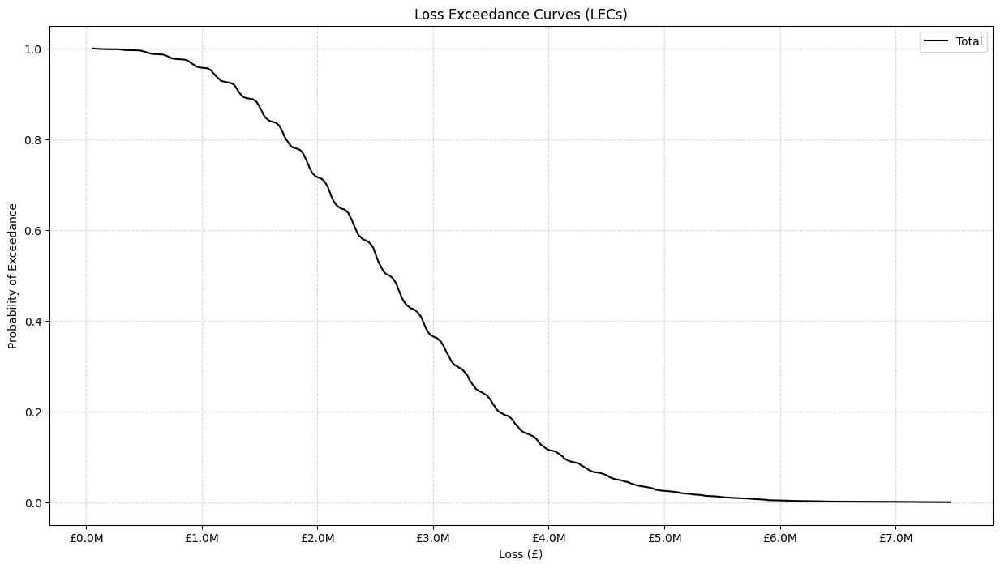
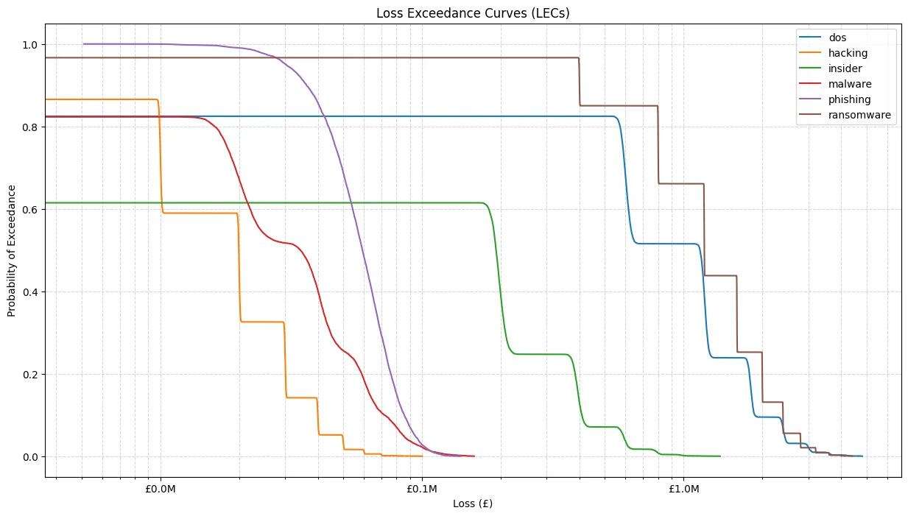
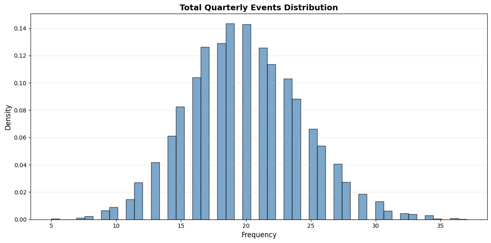
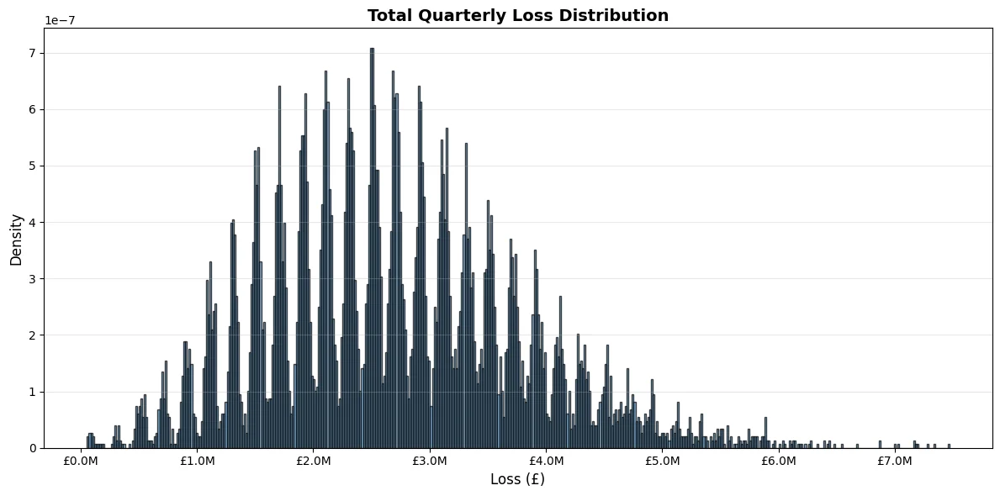

Risk analysis · data analytics
Risk Management with Monte Carlo Simulation
A probabilistic model for exploring annual and quarterly losses when both event frequency and impact are uncertain.
Overview
A single expected-loss figure can hide the range of outcomes a risk may produce. This project used simulation to explore how uncertain event frequency and loss severity combine over time.
The notebook models frequency with a Poisson distribution and severity with a lognormal distribution, then summarises the simulated losses with annual and quarterly views.
My contribution
- Built the frequency and severity model in a Jupyter notebook.
- Ran 10,000 Monte Carlo trials and calculated the implied annual loss measure (IALE).
- Plotted loss exceedance curves for individual risks and the portfolio total.
- Produced quarterly event and loss views to make the simulated results easier to interpret.
How it works
For each of 10,000 trials, the model samples an event count from a Poisson distribution and loss severities from a lognormal distribution, then aggregates the losses.
The notebook compares per-risk and total losses, calculates IALE, and groups simulated events and losses by quarter.
Key decisions
Model frequency and severity separately
Choice: Use a Poisson model for event counts and a lognormal model for loss size.
Why: The two parts represent different uncertainties and can be inspected independently before being combined.
Trade-off: The distributions are assumptions. They need evidence and calibration before the output can inform real decisions.
Show more than an average
Choice: Report exceedance curves and quarterly outcomes alongside the annual loss measure.
Why: Averages alone do not show how often larger losses appear in the modelled range.
Trade-off: Simulation plots can look precise even when the underlying inputs are uncertain.
Results
The notebook produces per-risk and total loss exceedance curves, plus quarterly event and loss summaries.
These views make the effects of the chosen frequency and severity assumptions visible across a range of simulated outcomes.
Limits and next steps
The output is only as credible as the distributions and parameters supplied to the model. The simulation does not remove uncertainty from the input data.
Next, I would document the data behind each parameter, compare simulated results with observed loss history where available, and add sensitivity analysis.
Project images
Select an image to view it at a larger size.








Tools and methods
The charts shown here come from the risk management assignment notebook.